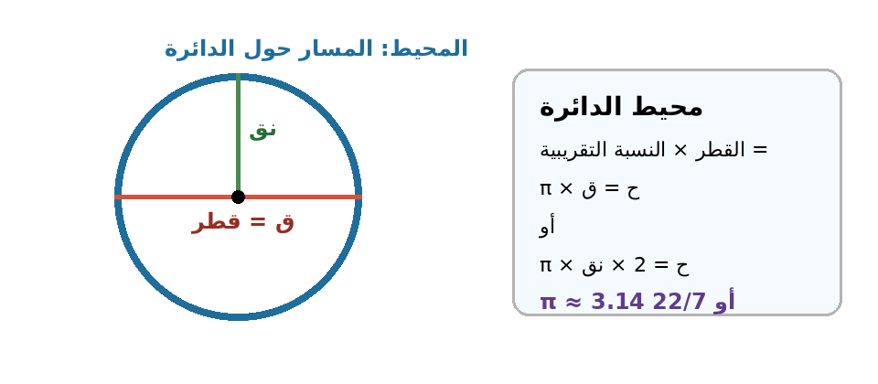

| البند | البيان | البند | البيان |
|---|---|---|---|
| المادة | الرياضيات | الصف | السادس الأساسي |
| الوحدة | السابعة: الهندسة | عنوان الدرس | محيط الدائرة |
| عدد الحصص المقترح | 4 حصص × 45 دقيقة | المجال | الهندسة والقياس |
| مكان التنفيذ | غرفة الصف/مختبر الحاسوب/اللوح الذكي | نوع التحضير | تحضير محوسب مع ورقة عمل تفاعلية |
| المعلم : زهدي زاهدة | التاريخ: ............ |
فكرة الدرس المركزية
يتعرّف الطالب إلى محيط الدائرة بوصفه طول المسار حول الدائرة، ثم يستكشف عملياً أن ناتج قسمة محيط الدائرة على قطرها ثابت تقريباً ويسمى النسبة التقريبية π أو ط.
وبعد ذلك يوظف القانونين: محيط الدائرة = ق × π، ومحيط الدائرة = 2 × نق × π، في إيجاد المحيط أو القطر أو نصف القطر ضمن مسائل مباشرة وحياتية،
مع اختيار القيمة المناسبة للنسبة التقريبية وكتابة وحدة القياس الخطية.
الأهداف السلوكية
• أن يتعرّف الطالب إلى مفهوم محيط الدائرة بوصفه طول المسار حول الدائرة بلغة رياضية صحيحة.
• أن يستنتج الطالب أن ناتج قسمة محيط الدائرة على قطرها يساوي تقريباً النسبة التقريبية π.
• أن يحسب الطالب محيط دائرة إذا علم طول قطرها أو نصف قطرها مستخدماً القانون المناسب.
• أن يجد الطالب طول نصف قطر دائرة أو قطرها إذا علم محيطها.
• أن يوظف الطالب قانون محيط الدائرة في حل مشكلات حياتية مع اختيار القيمة المناسبة لـ π وكتابة وحدة القياس الصحيحة.
رسم توضيحي مختصر لمحيط الدائرة وقانونها

المفاهيم والتعلم القبلي والمهارات
| البند | التفصيل |
|---|---|
| المفاهيم الجديدة | محيط الدائرة، القطر (ق)، نصف القطر (نق)، النسبة التقريبية π أو ط، القانون: ح = ق × π، القانون: ح = 2 × نق × π. |
| التعلم القبلي | تعريف الدائرة وعناصرها، العلاقة ق = 2 × نق، مفهوم المحيط في الأشكال الهندسية، القياس بالمسطرة والخيط، الضرب والقسمة، وحدات الطول. |
| المهارات | القياس العملي، الملاحظة والاستنتاج، قراءة المعطيات، اختيار القانون، التعويض المنظم، التحقق من وحدة القياس، حل مشكلات حياتية. |
| القيم والاتجاهات | الدقة في القياس، العمل التعاوني، احترام آراء الزملاء، ربط الرياضيات بالحياة اليومية والتراث الفلسطيني. |
نموذج التحضير
| اليوم/التاريخ | الأهداف | المفاهيم الجديدة | التعلم القبلي | الأنشطة والتدريبات | التقويم | التغذية الراجعة |
|---|---|---|---|---|---|---|
| اليوم: ........ التاريخ: ........ |
أن يتعرّف الطالب إلى محيط الدائرة بوصفه طول المسار حول الدائرة، وأن يقيسه تقريبياً باستخدام خيط ومسطرة. | محيط الدائرة، المسار حول الدائرة، القياس التقريبي. | مفهوم المحيط في المستطيل والمربع، عناصر الدائرة، استخدام المسطرة. | تهيئة بصورة عملة أو ساعة أو غطاء دائري. يمرر الطالب قلماً حول دائرة مرسومة، ثم يقيس محيط جسم دائري بالخيط والمسطرة ضمن مجموعات. | سؤال شفوي: كيف نقيس محيط جسم دائري لا تكفي المسطرة وحدها لقياسه؟ ثم متابعة جدول القياس. | تصحيح فوري: المحيط ليس مساحة داخل الدائرة، بل طول حافتها. إعادة القياس عند شد الخيط أو ارتخائه. |
| اليوم: ........ التاريخ: ........ |
أن يستنتج الطالب من القياس العملي أن المحيط ÷ القطر يساوي تقريباً قيمة ثابتة تسمى π. | النسبة التقريبية π، المحيط ÷ القطر، الثبات التقريبي. | القسمة، القطر، قياس طول القطر. | تقيس كل مجموعة قطر ومحيط 3 أو 4 مجسمات دائرية، ثم تحسب المحيط ÷ القطر وتعرض النتائج. يناقش المعلم تقارب القيم حول 3.14. | أكمل: إذا كان المحيط 31.4 سم والقطر 10 سم فإن المحيط ÷ القطر = | التأكيد أن اختلاف القياس العملي مقبول بسبب التقريب، وأن القيمة الرياضية المستعملة تقريبية. |
| اليوم: ........ التاريخ: ........ |
أن يحسب الطالب محيط دائرة إذا علم قطرها أو نصف قطرها باستخدام القانون المناسب. | ح = ق × π، ح = 2 × نق × π، اختيار قيمة π. | العلاقة بين القطر ونصف القطر، الضرب في أعداد عشرية أو كسور. | حل أمثلة من الكتاب: ساعة قطرها 14 سم، وبركة نصف قطرها 5.5 م. يوضح المعلم سبب اختيار 22/7 أو 3.14 حسب سهولة الحساب. | احسب محيط دائرة قطرها 10 سم، ثم احسب محيط دائرة نصف قطرها 3.8 سم. | تغذية راجعة: تحديد المعطى أولاً: ق أم نق، ثم كتابة القانون، ثم التعويض، ثم الوحدة. |
| اليوم: ........ التاريخ: ........ |
أن يجد الطالب نصف القطر أو القطر إذا علم المحيط، وأن يوظف القانون في مسألة حياتية. | إيجاد نق من ح، إيجاد ق من ح، وحدة الطول. | القسمة، المحافظة على طرفي المعادلة، وحدات القياس. | ينفذ الطلبة ورقة العمل المحوسبة: مختبر محيط الدائرة، تدريبات حسابية، أسئلة اختيار من متعدد، وسؤال حياتي. ثم يناقش المعلم إجابات الطلبة. | ورقة عمل محوسبة + سؤال ختامي: دائرة محيطها 44 سم، أوجد نصف قطرها باستخدام 22/7. | تصحيح فوري من الورقة المحوسبة، ثم علاج جماعي للأخطاء المتكررة: نسيان 2 عند استخدام نصف القطر أو نسيان الوحدة. |
خطة سير الحصتين الأولى والثانية
| الحصة | الزمن | الإجراء التعليمي |
|---|---|---|
| الحصة الأولى | 5 دقائق | تهيئة: عرض عملة، ساعة حائط، طبق دائري أو غطاء دائري. طرح سؤال: كيف نقيس طول المسار حول هذا الشكل؟ |
| الحصة الأولى | 10 دقائق | ينفذ الطلبة نشاط تمرير القلم على الدائرة، ثم يصفون بلغة بسيطة ما المقصود بمحيط الدائرة. |
| الحصة الأولى | 15 دقيقة | نشاط عملي جماعي: قياس محيط أجسام دائرية بالخيط، وقياس القطر بالمسطرة، وتسجيل النتائج في جدول. |
| الحصة الأولى | 10 دقائق | مناقشة الأخطاء العملية: شد الخيط، بداية القياس، الفرق بين المحيط والقطر، وتثبيت مفهوم المحيط. |
| الحصة الأولى | 5 دقائق | تذكرة خروج: اكتب جملة تصف محيط الدائرة، واذكر أداة يمكن أن تساعدك في قياسه. |
| الحصة الثانية | 8 دقائق | مراجعة نتائج القياس من الحصة السابقة، ثم حساب المحيط ÷ القطر لعدة أجسام. |
| الحصة الثانية | 15 دقيقة | اكتشاف: مقارنة نواتج القسمة بين المجموعات والتوصل إلى أن القيمة قريبة من 3.14 أو 22/7. |
| الحصة الثانية | 12 دقيقة | صياغة القاعدة: ح ÷ ق = π، ومنها ح = ق × π. ربطها بالعلاقة ق = 2 × نق لاشتقاق ح = 2 × نق × π. |
| الحصة الثانية | 7 دقائق | تطبيق مباشر: إذا كان ق = 14 سم فاحسب ح باستخدام 22/7. وإذا كان نق = 5 سم فاحسب ح باستخدام 3.14. |
| الحصة الثانية | 5 دقائق | تلخيص شفوي: ما معنى π؟ ومتى نستخدم 22/7 أو 3.14؟ |
| الحصة الثالثة | 5 دقائق | تهيئة: مراجعة العلاقة ق = 2 × نق، وكتابة قانوني محيط الدائرة على السبورة. |
| الحصة الثالثة | 12 دقيقة | مثال موجه: ساعة حائط قطرها 14 سم. يختار الطلبة π = 22/7 لأن القطر من مضاعفات 7، ثم يحسبون المحيط. |
| الحصة الثالثة | 12 دقيقة | مثال موجه: بركة نصف قطرها 5.5 م. يختار الطلبة π = 3.14، ثم يحسبون ح = 2 × نق × π. |
| الحصة الثالثة | 15 دقيقة | تدريبات فردية وثنائية: إيجاد المحيط عند معرفة القطر أو نصف القطر، مع متابعة المعلم للخطوات والوحدة. |
| الحصة الثالثة | 5 دقائق | تذكرة خروج: متى أستخدم ح = ق × π؟ ومتى أستخدم ح = 2 × نق × π؟ |
| الحصة الرابعة | 8 دقائق | مراجعة علاجية: قراءة المسألة وتحديد المعطى والمطلوب قبل اختيار القانون. |
| الحصة الرابعة | 12 دقيقة | حل معكوس: محيط دائرة = 44 سم. أوجد نصف القطر. يوضح المعلم القسمة على 2π أو إيجاد القطر أولاً ثم نصفه. |
| الحصة الرابعة | 15 دقيقة | تنفيذ ورقة العمل المحوسبة فردياً أو ثنائياً. يحصل الطالب على تغذية راجعة فورية ودرجة تقديرية. |
| الحصة الرابعة | 8 دقائق | مناقشة إجابات الورقة المحوسبة، والوقوف على الخطأ في وحدة القياس أو اختيار قيمة π. |
| الحصة الرابعة | 5 دقائق | تقويم ختامي: مسألة حياتية قصيرة حول شريط يحيط بطاولة دائرية أو إطار صورة دائري. |
الصعوبات والمفاهيم الخاطئة المتوقعة وإجراءات علاجها
| الصعوبة/الخطأ المتوقع | إجراء علاجي مقترح |
|---|---|
| يخلط الطالب بين محيط الدائرة ومساحة الدائرة. | استخدام تمثيل بصري: تلوين الحافة فقط للمحيط، وتلوين الداخل للمساحة. التأكيد أن وحدة المحيط سم أو م وليست سم² أو م². |
| ينسى الطالب مضاعفة نصف القطر عند استخدام قانون ح = 2 × نق × π. | تثبيت العلاقة ق = 2 × نق قبل التعويض، وكتابة القانون كاملاً في كل مرة، ثم وضع خط تحت المعطى: ق أم نق. |
| يختار الطالب قيمة غير مناسبة لـ π، أو لا يعرف متى يستخدم 22/7 أو 3.14. | توضيح أن القيمتين تقريبيتان، ويفضل 22/7 عندما يكون القطر أو نصف القطر مناسباً للقسمة على 7، و3.14 في الأعداد العشرية. |
| عند إيجاد نصف القطر من المحيط يقسم الطالب المحيط على π فقط وينسى القسمة على 2. | تدريب الطلبة على طريقتين: إيجاد القطر أولاً ح ÷ π، ثم نق = ق ÷ 2، أو استخدام نق = ح ÷ (2π). |
| الخطأ في وحدة القياس أو تقريب الناتج. | تذكير مستمر بأن المحيط طول، ووحدته خطية. قبول التقريب المناسب مع كتابة: تقريباً عند استخدام π التقريبية. |
تثبيت الأهداف بورقة العمل المحوسبة
| الهدف | موضعه في الورقة المحوسبة | دور المعلم |
|---|---|---|
| تمييز مفهوم محيط الدائرة | عرض دائرة تفاعلية وتلوين محيطها، مع سؤال: ماذا يمثل المسار حول الدائرة؟ | يسأل المعلم عن الفرق بين المحيط والداخل، ويطلب مثالاً حياتياً: شريط حول ساعة أو طاولة. |
| استنتاج النسبة التقريبية | مختبر يغيّر نصف القطر ويعرض القطر والمحيط وناتج المحيط ÷ القطر. | يوجه المعلم الطلبة لملاحظة ثبات الناتج تقريباً، لا حفظه مباشرة. |
| حساب المحيط | تدريبات إدخال الإجابة على محيط دائرة عند معرفة القطر أو نصف القطر. | يتحقق المعلم من اختيار القانون وكتابة وحدة القياس. |
| إيجاد نصف القطر أو القطر | سؤال تفاعلي: محيط معلوم، والمطلوب إيجاد نصف القطر أو القطر. | يوجه الطلبة لاستخدام خطوات مرتبة: القانون - التعويض - القسمة - الوحدة. |
| التطبيق الحياتي | مسألة شريط حول ساعة أو طاولة دائرية، مع قرار هل الكمية تكفي أم لا. | يربط المعلم الرياضيات بمواقف حياتية قريبة من الطالب. |
ورقة عمل ورقية مرافقة
تعليمات للطالب: اقرأ المعطى أولاً وحدد هل هو قطر أم نصف قطر أم محيط، ثم اكتب القانون والتعويض ووحدة القياس.
| رقم السؤال | السؤال |
|---|---|
| 1 | أكمل: محيط الدائرة هو .............................................................. |
| 2 | أكمل: إذا كان طول القطر 10 سم فإن محيط الدائرة = 10 × 3.14 = .......... سم. |
| 3 | دائرة نصف قطرها 7 سم. أوجد محيطها مستخدماً π = 22/7. |
| 4 | دائرة محيطها 44 سم. أوجد طول قطرها ثم نصف قطرها. |
| 5 | ساعة حائط دائرية قطرها 28 سم، نريد وضع شريط حولها. ما طول الشريط اللازم تقريباً؟ |
| 6 | اشترت دعاء غطاءً دائرياً لطاولة قطرها 2 م، ويتدلى الغطاء 25 سم من كل جانب. أوجد محيط حافة الغطاء، ثم قرر هل يكفي شريط طوله 7 م لإحاطتها؟ |
إجابات ورقة العمل
| رقم السؤال | الإجابة النموذجية |
|---|---|
| 1 | طول المسار حول الدائرة أو طول حافتها. |
| 2 | 31.4 سم. |
| 3 | ح = 2 × 7 × 22/7 = 44 سم. |
| 4 | ق = ح ÷ π = 44 ÷ 22/7 = 14 سم، نق = 7 سم. |
| 5 | ح = 28 × 22/7 = 88 سم. |
| 6 | قطر الغطاء = 2 م + 0.25 م + 0.25 م = 2.5 م. محيط الغطاء ≈ 2.5 × 3.14 = 7.85 م، لذلك لا يكفي شريط طوله 7 م. |
نشاط إثرائي وتكليف بيتي
| البند | التفصيل |
|---|---|
| نشاط إثرائي | يقيس الطالب في البيت محيط وقطر ثلاثة أشياء دائرية آمنة مثل غطاء علبة أو طبق، ثم يحسب المحيط ÷ القطر ويقارن القيم التي حصل عليها. |
| تكليف بيتي | حل تدريبات الكتاب المتعلقة بمحيط الدائرة، مع كتابة القانون في بداية كل حل ووحدة القياس في النهاية. |
| ملف الإنجاز | يضيف الطالب صورة أو رسماً لجسم دائري من بيئته، ويكتب كيف يحسب محيطه وما الأدوات التي يحتاجها. |